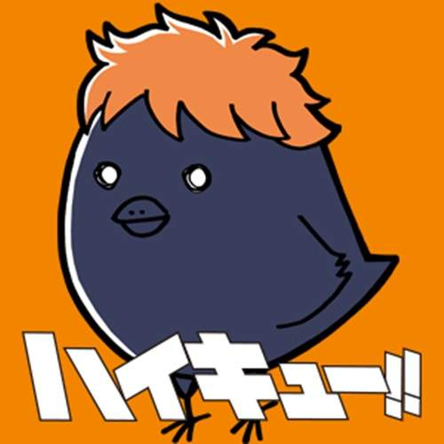
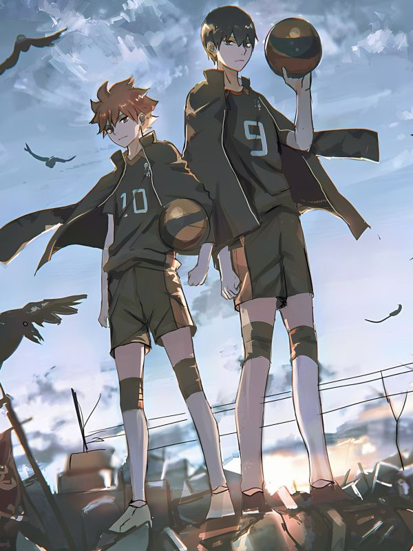
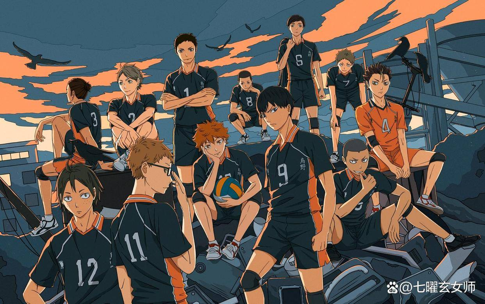

主角介紹

日向翔陽

日向翔陽為本作的主角，性格單純、率直，身高雖矮小但運動神經發達，小時候在電視看到烏野高中的排球比賽，
被一然身高矮小卻擁有超強實力的「小巨人」球員所吸引，自此便就努力想成為和小巨人一樣厲害的選手。
在國中唯一一場比賽中，對上強豪北川第一中學的影山飛雄而慘敗，日向誓言要打敗影山，卻和影山就讀了同一所「烏野高中」。
影山飛雄雖擁有極佳的球感與技術，但因不善於溝通，國中時其他成員都不願意配合他的舉球，被諷為「球場上的王者」（意指行事獨裁），
但運用精準的舉球能力完美配合了日向的爆發式跳躍，發展出「怪人速攻」之超強絕招 ，成為最佳搭檔同時也是對方的最棒的對手。
影山飛雄烏野高校排球部的二傳手。雖然嘴巴說出來的話總是不中聽，不過本人其實並不帶惡意，
擁有超群的球感、控球能力、敏銳的判斷力和出色的身體能力，能夠傳出精準度極高的托球，在準度方面本作中無人能出其右。
即使是天才，也不吝惜努力，經常從他校的舉球員身上學習值得效法的技術。與音駒的練習比賽後也想向孤爪討教眼神假動作的技術，
但因為態度看起來咄咄逼人所以嚇跑人家了。自尊心很高，但在其之上更強烈的是對勝利的渴望。不容易緊張，
反而遇見強大對手時會有高機率進入日向所謂「平心靜氣影山」的狀態，全身的感官都如同雷達般敏銳，
球感也達到最佳狀態，冷靜到有種暴風雨前寧靜的威嚇感。
劇情簡介
《排球少年！ ！ 》是一部以排球為主題的日本漫畫和動畫作品，由古館春一創作。故事的主角是日向翔陽，一個身材矮小但對排球充滿熱情的青少年。小學時，他在電視上看到烏野高中排球隊的「小巨人」表現出色，立志成為像他一樣的排球選手。
中學時期，由於隊員不足，日向一直無法參加正式比賽，直到最後一次機會，他和臨時組成的隊伍對戰北川第一中學的影山飛雄。然而，這場比賽以慘敗告終。儘管如此，日向並沒有放棄，他發誓要在排球場上擊敗影山。
進入烏野高中後，日向意外發現影山也在這裡，兩人起初互相敵視，但在教練和隊友的幫助下，逐漸學會合作，形成了強力的「怪人速攻」戰術。這使他們在校內外的比賽中逐漸嶄露頭角。
在全國大賽預選賽中，烏野高中憑藉著團隊合作和不斷提升的技術，成功晉級全國大賽。全國大賽中，烏野高中面對強敵，透過艱苦的比賽磨練，隊員們在技術和心理上都得到了極大的成長。
整個故事不僅展現了激動人心的排球比賽，更透過每個角色的成長和努力，傳達了關於夢想、友誼和團隊合作的深刻主題。
